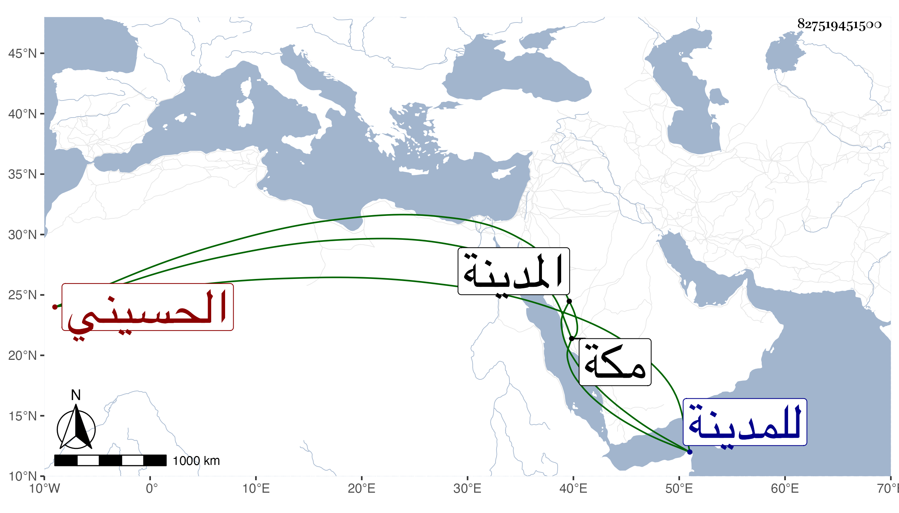

0902Sakhawi.DawLamic.ITO20230111-ara1.EIS1600.827519451500
Biography ID: 827519451500
537
فارس بن شامان بن زهير الحسيني ابن خال صاحب مكة وزوج ابنته والماضي أبوه وهو ابن عم الزبيري صاحب المدينة ووالد حسن صاحبها ، رأيته معه في آخر جمادى الثانية سنة ثمان وتسعين حين زيارته للمدينة ومعه ابن له ابن خمس سنين ابنه الباز من ابنة الشريف وقال لي أنه كان حين موت أبيه ابن أربع وعشرين سنة فيكون مولده تقريبا سنة تسع وخمسين .
